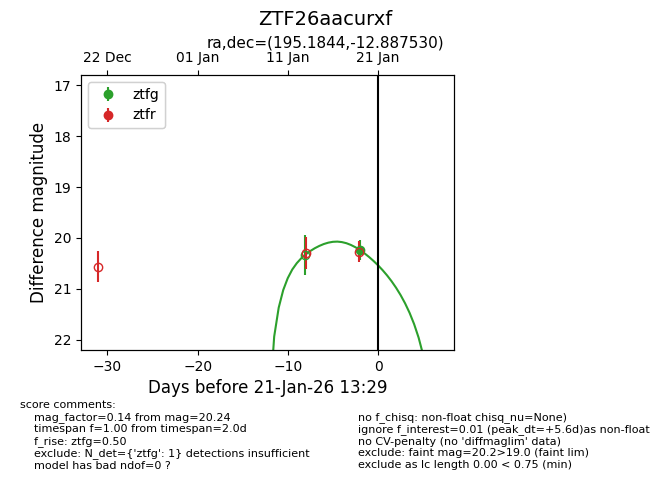
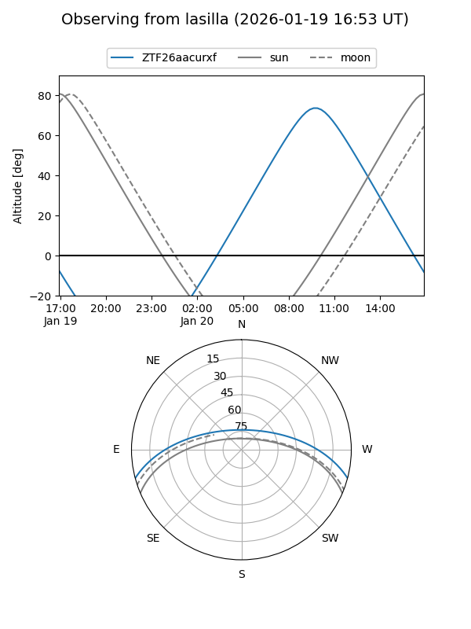
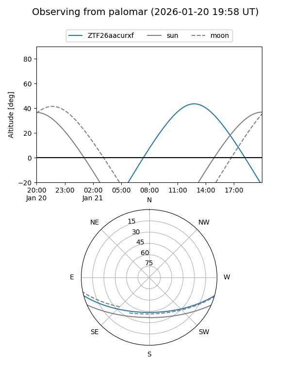
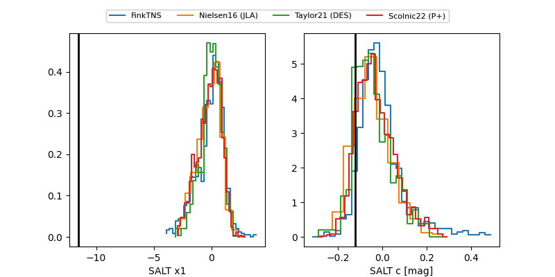

ZTF26aacurxf
Target ZTF26aacurxf at 2026-01-21 13:31
Aliases and brokers:
FINK: link
Lasair: link
ALeRCE: link
alt names
ZTF26aacurxf (ztf,fink_ztf)
Coordinates:
equatorial (ra, dec) = 195.1844,-12.88753
equatorial (HMS+DMS) = 13:00:44.25,-12:53:15.11
galactic (l, b) = (306.4532,+49.92063)
Flags:
Photometry:
last ztfg=20.24
1 ztfg detections
Lightcurve

Visibility


Additional plots
